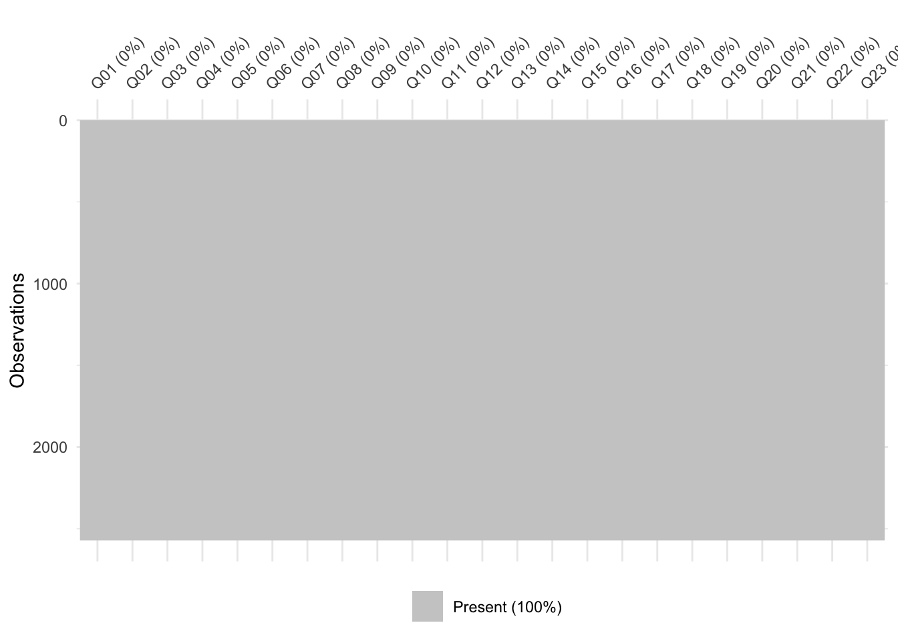
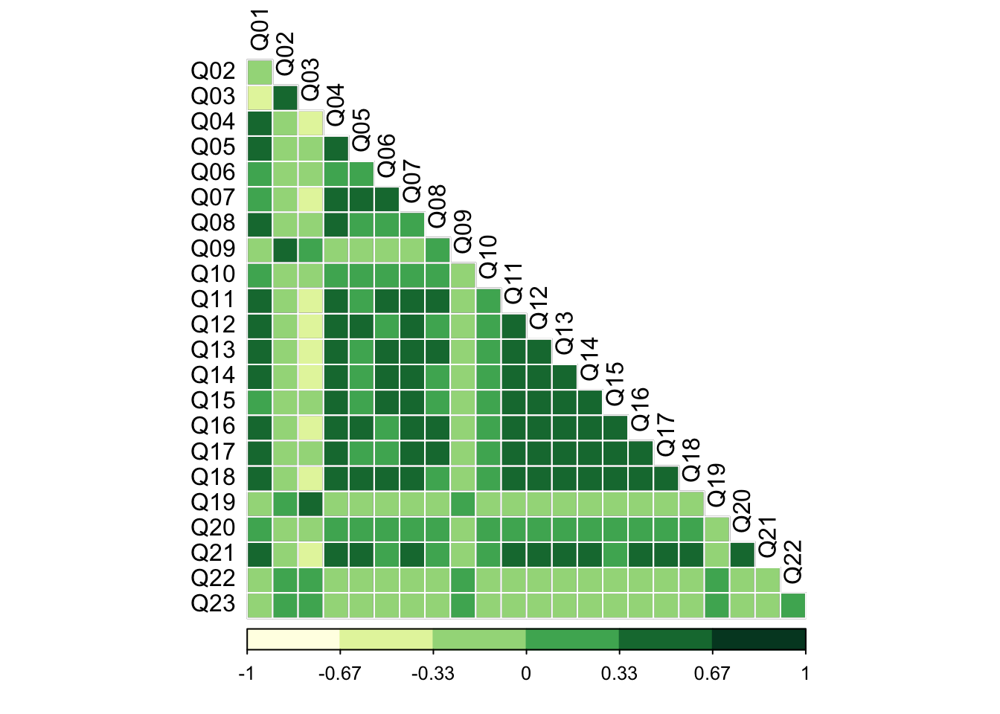
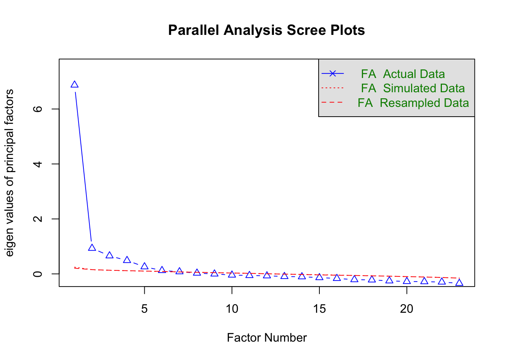
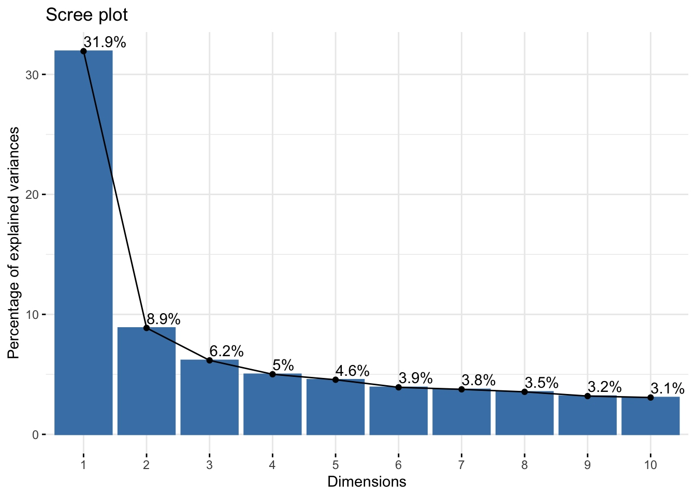
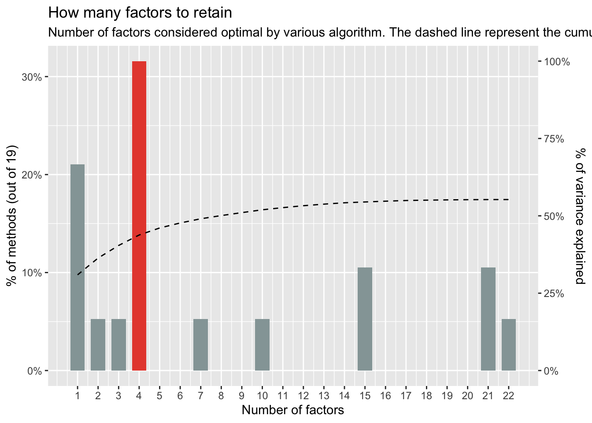
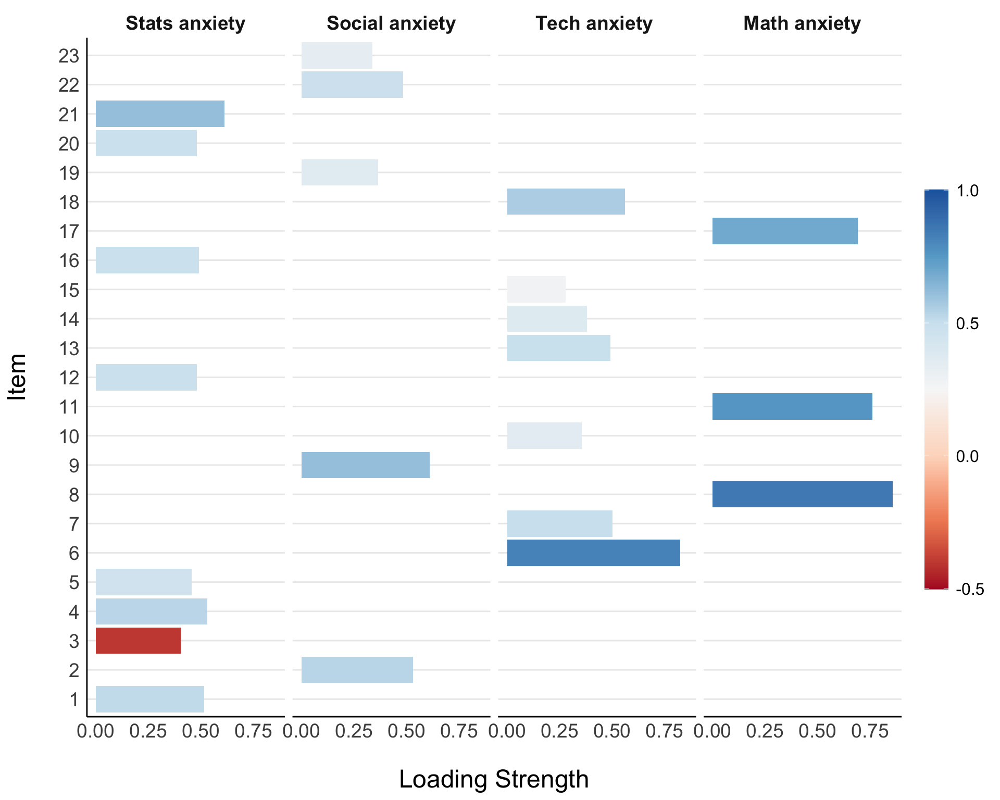
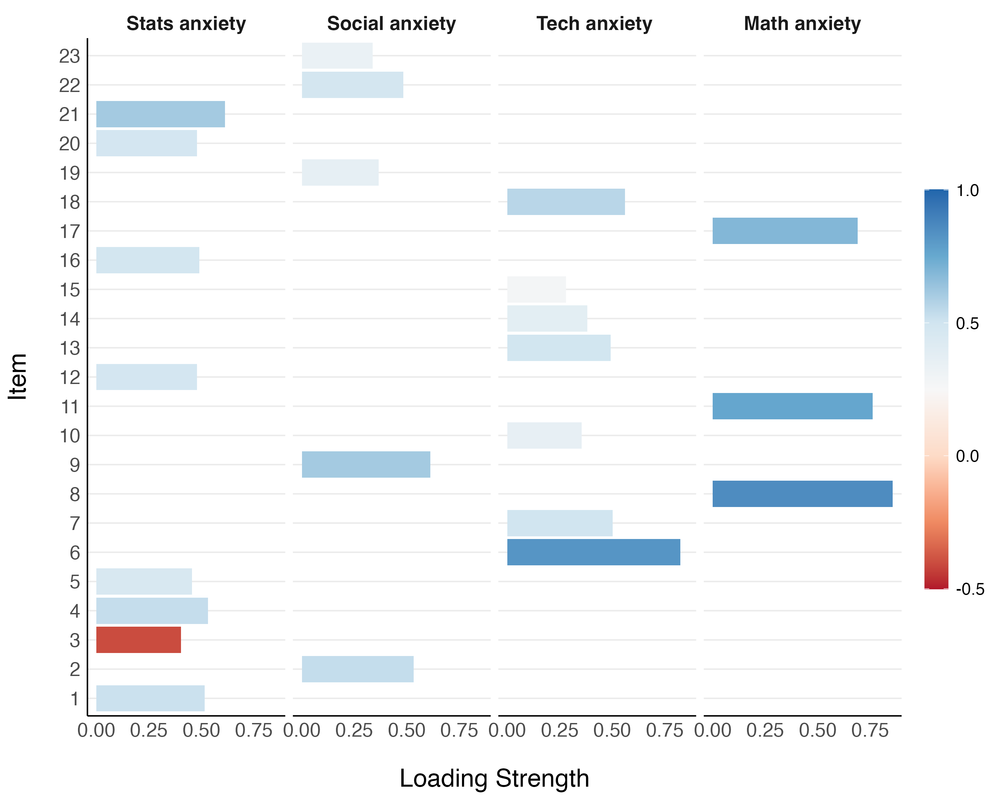

#devtools::install_github("dr-JT/semoutput")
library(semoutput)
library(naniar) # for missingness visualization
library(factoextra)
library(knitr)
library(corrplot) # nice correlation plots
library(easystats) # paramaters
library(tidyverse) # tidying visualization
library(psych) # fa func
library(gt) # for tables
source("https://raw.githubusercontent.com/franciscowilhelm/r-collection/master/fa_table.R") # for FA tablesLab 9 FA Answers
Lab 8 - Factor Analysis and SEM - ANS
We are going to assess a scale that measures the anxiety that statistics provokes in students
The dataset is from Andy Field with the following questions:
- Statistics makes me cry
- My friends will think I’m stupid for not being able to cope with R
- Standard deviations excite me
- I dream that Pearson is attacking me with correlation coefficients
- I don’t understand statistics
- I have little experience of computers
- All computers hate me
- I have never been good at mathematics
- My friends are better at statistics than me
- Computers are useful only for playing games
- I did badly at mathematics at school
- People try to tell you that R makes statistics easier to understand but it doesn’t
- I worry that I will cause irreparable damage because of my incompetence with computers
- Computers have minds of their own and deliberately go wrong whenever I use them
- Computers are out to get me
- I weep openly at the mention of central tendency
- I slip into a coma whenever I see an equation
- R always crashes when I try to use it
- Everybody looks at me when I use R
- I can’t sleep for thoughts of eigenvectors
- I wake up under my duvet thinking that I am trapped under a normal distribution
- My friends are better at R than I am
- If I’m good at statistics my friends will think I’m a nerd
data <- read_csv("https://raw.githubusercontent.com/doomlab/learnSEM/master/vignettes/data/lecture_efa.csv", show_col_types = FALSE)Exploratory Factor Analysis
- Explore the data. Make sure there are no missing data points and get rid of outliers. Look at a correlation matrix.
# explore missingness
vis_miss(data)
It doesn’t seem like there are any missing values in the data. I’ll confirm that, just to be safe:
# remove any missing values
missing = na.omit(data)
# ensure the removal hasn't changed the number of rows in the data
nrow(data) == nrow(missing)[1] TRUE# check outliers
performance::check_outliers(data)97 outliers detected: cases 20, 84, 94, 160, 174, 196, 235, 285, 313,
332, 346, 354, 460, 512, 522, 524, 539, 564, 612, 626, 678, 680, 701,
756, 772, 794, 808, 812, 845, 854, 875, 888, 986, 999, 1063, 1092, 1117,
1123, 1128, 1196, 1213, 1245, 1272, 1278, 1285, 1288, 1326, 1356, 1359,
1375, 1398, 1432, 1464, 1505, 1508, 1520, 1537, 1586, 1588, 1614, 1659,
1675, 1712, 1732, 1779, 1837, 1840, 1847, 1866, 1884, 1933, 1961, 1967,
1988, 2009, 2017, 2035, 2051, 2129, 2132, 2227, 2265, 2357, 2359, 2382,
2388, 2402, 2407, 2411, 2431, 2439, 2466, 2479, 2491, 2510, 2513, 2563.
- Based on the following method and threshold: mahalanobis (50).
- For variables: Q01, Q02, Q03, Q04, Q05, Q06, Q07, Q08, Q09, Q10, Q11,
Q12, Q13, Q14, Q15, Q16, Q17, Q18, Q19, Q20, Q21, Q22, Q23.There are outlines though. I’ll remove those:
# remove outliers
outliers = as.numeric(check_outliers(data))
cleaned = data[!outliers, ]# correlation matrix
cormatrix = cor(cleaned)
corrplot(cormatrix, method = 'color', type = 'lower', diag = FALSE,
outline = T, addgrid.col = "white",col = COL1("YlGn", 6),
tl.col = "black")
Visually, it appears that there are a number of correlations between the items. Most are weakly negative or positive (< +/- .33), while some are moderate and positive (between .33 and .67). Item 3 (Q03) is moderately negatively correlated with many of the other items (between -.67 and -.33). The irony of an item on standard deviations being an outlier is not lost on me!
Conduct and interpret the three diagnostic tests to determine if factor analysis is appropriate as an analysis.
det(cormatrix)[1] 0.0003611339The determinant of the correlation matrix is .0004. This metric uses the correlation matrix to assess the level of multicolinearity among the items. Typically a value less than .00001 is taken to suggest that sever multicolinearity is present. As the determinant for the current data was above that threshold value, we can assume that multicolinearity will not be a problem for our analyses.
# Bartlett's test and Kaiser-Meyer-Olkin (KMO) test
performance::check_factorstructure(cleaned)# Is the data suitable for Factor Analysis?
- Sphericity: Bartlett's test of sphericity suggests that there is sufficient significant correlation in the data for factor analysis (Chisq(253) = 19534.27, p < .001).
- KMO: The Kaiser, Meyer, Olkin (KMO) overall measure of sampling adequacy suggests that data seems appropriate for factor analysis (KMO = 0.93). The individual KMO scores are: Q01 (0.94), Q02 (0.88), Q03 (0.95), Q04 (0.96), Q05 (0.96), Q06 (0.90), Q07 (0.94), Q08 (0.88), Q09 (0.85), Q10 (0.96), Q11 (0.91), Q12 (0.96), Q13 (0.95), Q14 (0.97), Q15 (0.95), Q16 (0.94), Q17 (0.93), Q18 (0.95), Q19 (0.95), Q20 (0.89), Q21 (0.93), Q22 (0.89), Q23 (0.79).Results from Bartlett’s test of sphericity suggest that the observed correlations are significantly different from those under the null (i.e., an identity matrix): \(\chi^2\) (253) = 9,534.27, p < .001. Additionally, the overall Kaiser-Meyer-Olkin (KMO) measure of sampling adequacy suggests the data are suitable for factor analyses; KMO = .93. All items in the data had a KMO >= .79. As such, no items were excluded from our analyses.
- Determine how many factors to extract. Inspect and interpret eigenvalues, scree plot, parallel plot, and the consensus method. Do they all agree? Make a choice on as to how many factors you want to extract
# parallel plot
number_items <- fa.parallel(cleaned, fa="fa")
Parallel analysis suggests that the number of factors = 6 and the number of components = NA The parallel plot suggests that there are 5 factors to extract, or 6 at a push (the 6th factor is bisected by the re-sampled data).
# Eigenvalues > 1
sum(number_items$fa.values >= 1)[1] 1# Eigenvalues > .77
sum(number_items$fa.values >= .7)[1] 2Depending on the Eigenvalue threshold that we set, this method suggests that there is either one factor (one Eigenvalue >= 1) or two factors (two Eigenvalues >= .77) to extract.
# scree plot
res.pca = prcomp(cleaned)
fviz_screeplot(res.pca, addlabels = TRUE)
From the scree plot, it is difficult to gauge how many factors ought to be extracted. Looking at the ‘elbow’ shape, we might say that the variance explained levels off after the 6th factor, suggesting we extract 6 factors.
# consensus method
n_factors(cleaned) %>% plot()
None of the methods appear to agree on the appropriate number of factors to use in our analyses, with values ranging from 1 to 6. The consensus method suggests that a 4-factor solution would suit the data best. Given that the consensus approach draws from multiple tests to reach its conclusion, we can have greater confidence in its recommendation. As such, we will extract 4 factors.
Conduct a factor analysis (choose an extraction method and rotation).
library(GPArotation) # extract factor loadings using principal axis factoring # perform oblique rotation efa = psych::fa(cleaned, nfactors = 4, rotate = "oblimin", fm = "pa")Look at the factor loadings. Which items appear to load on which factor? Are there any items that seem to load strongly on multiple factors (i.e., items that are cross-loaded)? Use
model_paramatersand thethresholdargument to get rid of loadings greater than .3. Does that help with interpretation? If not, try setting thethresholdto max.
table = fa_table(efa)
table$ind_table| Factor analysis results | |||||||
|---|---|---|---|---|---|---|---|
| Factor_1 | Factor_2 | Factor_3 | Factor_4 | Communality | Uniqueness | Complexity | |
| Q21 | 0.612 | 0.050 | 0.032 | -0.081 | 0.48 | 0.52 | 1.05 |
| Q04 | 0.531 | 0.087 | 0.136 | 0.044 | 0.42 | 0.58 | 1.20 |
| Q01 | 0.515 | 0.028 | 0.192 | 0.089 | 0.39 | 0.61 | 1.34 |
| Q16 | 0.490 | 0.083 | 0.155 | -0.083 | 0.46 | 0.54 | 1.32 |
| Q20 | 0.480 | -0.164 | 0.041 | -0.184 | 0.28 | 0.72 | 1.56 |
| Q12 | 0.479 | 0.262 | -0.029 | -0.088 | 0.46 | 0.54 | 1.64 |
| Q05 | 0.455 | 0.105 | 0.090 | 0.029 | 0.32 | 0.68 | 1.20 |
| Q03 | -0.403 | 0.011 | -0.084 | 0.377 | 0.48 | 0.52 | 2.08 |
| Q06 | -0.121 | 0.823 | 0.024 | -0.006 | 0.61 | 0.39 | 1.04 |
| Q18 | 0.278 | 0.561 | 0.005 | -0.031 | 0.57 | 0.43 | 1.47 |
| Q07 | 0.276 | 0.501 | 0.038 | -0.016 | 0.51 | 0.49 | 1.57 |
| Q13 | 0.152 | 0.491 | 0.142 | -0.068 | 0.49 | 0.51 | 1.41 |
| Q14 | 0.317 | 0.381 | 0.037 | -0.051 | 0.42 | 0.58 | 2.00 |
| Q10 | 0.061 | 0.354 | 0.060 | -0.052 | 0.20 | 0.80 | 1.16 |
| Q15 | 0.142 | 0.280 | 0.198 | -0.140 | 0.33 | 0.67 | 2.92 |
| Q08 | 0.000 | -0.069 | 0.856 | 0.062 | 0.67 | 0.33 | 1.02 |
| Q11 | -0.033 | 0.072 | 0.761 | -0.097 | 0.65 | 0.35 | 1.05 |
| Q17 | 0.083 | 0.060 | 0.690 | 0.013 | 0.59 | 0.41 | 1.04 |
| Q09 | 0.019 | -0.022 | 0.060 | 0.611 | 0.36 | 0.64 | 1.02 |
| Q02 | -0.088 | 0.066 | 0.025 | 0.532 | 0.30 | 0.70 | 1.09 |
| Q22 | 0.148 | -0.120 | -0.095 | 0.483 | 0.26 | 0.74 | 1.41 |
| Q19 | -0.174 | -0.055 | -0.031 | 0.366 | 0.26 | 0.74 | 1.50 |
| Q23 | 0.151 | -0.005 | -0.110 | 0.337 | 0.11 | 0.89 | 1.63 |
Items 21, 4, 1, 16, 20, 12, and 5 appear to load onto our first factor. Items 6, 18, 7, 13, and 10 load onto a second factor. Three items, 8, 11, and 17, load onto the third factor. Items 9, 2, 22, 19, and 23 load onto the fourth and final factor. Three items are cross-loaded: 3, 14, and 15.
efa_thres3 = psych::fa(cleaned, nfactors = 4, rotate = "oblimin", fm = "pa") %>%
model_parameters(sort = TRUE, threshold = .3) %>%
kable()
efa_thres3| Variable | PA1 | PA3 | PA4 | PA2 | Complexity | Uniqueness |
|---|---|---|---|---|---|---|
| Q21 | 0.6116444 | NA | NA | NA | 1.054513 | 0.5182361 |
| Q04 | 0.5311099 | NA | NA | NA | 1.202102 | 0.5766165 |
| Q01 | 0.5154107 | NA | NA | NA | 1.344705 | 0.6066685 |
| Q16 | 0.4899273 | NA | NA | NA | 1.323471 | 0.5427897 |
| Q20 | 0.4795252 | NA | NA | NA | 1.562378 | 0.7174268 |
| Q12 | 0.4794756 | NA | NA | NA | 1.636805 | 0.5408813 |
| Q05 | 0.4547489 | NA | NA | NA | 1.197448 | 0.6844225 |
| Q03 | -0.4032247 | NA | NA | 0.3770254 | 2.084151 | 0.5225377 |
| Q06 | NA | 0.8231459 | NA | NA | 1.044750 | 0.3888809 |
| Q18 | NA | 0.5607670 | NA | NA | 1.469899 | 0.4273255 |
| Q07 | NA | 0.5008774 | NA | NA | 1.571972 | 0.4934675 |
| Q13 | NA | 0.4914419 | NA | NA | 1.411930 | 0.5111767 |
| Q14 | 0.3167518 | 0.3813609 | NA | NA | 1.996214 | 0.5759643 |
| Q10 | NA | 0.3544276 | NA | NA | 1.163905 | 0.8022067 |
| Q15 | NA | NA | NA | NA | 2.924955 | 0.6660505 |
| Q08 | NA | NA | 0.8563040 | NA | 1.023652 | 0.3347454 |
| Q11 | NA | NA | 0.7606754 | NA | 1.054426 | 0.3505212 |
| Q17 | NA | NA | 0.6904194 | NA | 1.044921 | 0.4109420 |
| Q09 | NA | NA | NA | 0.6108470 | 1.024233 | 0.6390627 |
| Q02 | NA | NA | NA | 0.5315814 | 1.090227 | 0.7029044 |
| Q22 | NA | NA | NA | 0.4832235 | 1.407255 | 0.7432065 |
| Q19 | NA | NA | NA | 0.3657082 | 1.502845 | 0.7448737 |
| Q23 | NA | NA | NA | 0.3369382 | 1.629619 | 0.8936777 |
Setting the threshold to .3 doesn’t appear to enhance interpretation greatly. The same items as before appear to be cross-loaded.
efa_thres_max = psych::fa(cleaned, nfactors = 4, rotate = "oblimin", fm = "pa") %>%
model_parameters(sort = TRUE, threshold = 'max') %>%
kable()
efa_thres_max| Variable | PA1 | PA3 | PA4 | PA2 | Complexity | Uniqueness |
|---|---|---|---|---|---|---|
| Q21 | 0.6116444 | NA | NA | NA | 1.054513 | 0.5182361 |
| Q04 | 0.5311099 | NA | NA | NA | 1.202102 | 0.5766165 |
| Q01 | 0.5154107 | NA | NA | NA | 1.344705 | 0.6066685 |
| Q16 | 0.4899273 | NA | NA | NA | 1.323471 | 0.5427897 |
| Q20 | 0.4795252 | NA | NA | NA | 1.562378 | 0.7174268 |
| Q12 | 0.4794756 | NA | NA | NA | 1.636805 | 0.5408813 |
| Q05 | 0.4547489 | NA | NA | NA | 1.197448 | 0.6844225 |
| Q03 | -0.4032247 | NA | NA | NA | 2.084151 | 0.5225377 |
| Q06 | NA | 0.8231459 | NA | NA | 1.044750 | 0.3888809 |
| Q18 | NA | 0.5607670 | NA | NA | 1.469899 | 0.4273255 |
| Q07 | NA | 0.5008774 | NA | NA | 1.571972 | 0.4934675 |
| Q13 | NA | 0.4914419 | NA | NA | 1.411930 | 0.5111767 |
| Q14 | NA | 0.3813609 | NA | NA | 1.996214 | 0.5759643 |
| Q10 | NA | 0.3544276 | NA | NA | 1.163905 | 0.8022067 |
| Q15 | NA | 0.2795392 | NA | NA | 2.924955 | 0.6660505 |
| Q08 | NA | NA | 0.8563040 | NA | 1.023652 | 0.3347454 |
| Q11 | NA | NA | 0.7606754 | NA | 1.054426 | 0.3505212 |
| Q17 | NA | NA | 0.6904194 | NA | 1.044921 | 0.4109420 |
| Q09 | NA | NA | NA | 0.6108470 | 1.024233 | 0.6390627 |
| Q02 | NA | NA | NA | 0.5315814 | 1.090227 | 0.7029044 |
| Q22 | NA | NA | NA | 0.4832235 | 1.407255 | 0.7432065 |
| Q19 | NA | NA | NA | 0.3657082 | 1.502845 | 0.7448737 |
| Q23 | NA | NA | NA | 0.3369382 | 1.629619 | 0.8936777 |
Setting the threshold value to ‘max’ on the other hand significantly aides interpretation by masking any cross-loadings and only showing the factors which each item maximally loads onto.
- Come up with names for the factors you extracted.
| Factor | Item | Description | Loading | Factor Name |
|---|---|---|---|---|
| 1 | 21 | I wake up under my duvet thinking that I am trapped under a normal distribution | .61 | Statistics anxiety |
| 4 | I dream that Pearson is attacking me with correlation coefficients | .53 | ||
| 1 | Statistics makes me cry | .52 | ||
| 16 | I weep openly at the mention of central tendency | .49 | ||
| 20 | I can’t sleep for thoughts of eigenvectors | .48 | ||
| 12 | People try to tell you that R makes statistics easier to understand but it doesn’t | .48 | ||
| 5 | I don’t understand statistics | .45 | ||
| 3 | Standard deviations excite me | -.40 | ||
| 2 | 9 | My friends are better at statistics than me | .61 | Social anxiety |
| 2 | My friends will think that I’m stupid for not being able to cope with R | .53 | ||
| 22 | My friends are better at R than I am | .48 | ||
| 19 | Everybody looks at me when I use R | .37 | ||
| 23 | If I’m good at statistics my friends will think I’m a nerd | .34 | ||
| 3 | 6 | I have little experience of computers | .82 | Technology anxiety |
| 18 | R always crashes when I try to use it | .56 | ||
| 7 | I slip into a coma whenever I see an equation | .5 | ||
| 13 | I worry that I will cause irreparable damage because of my incompetence with computers | .49 | ||
| 14 | Computers have minds of their own and deliberately go wrong whenever I use them | .38 | ||
| 10 | Computers are useful only for playing games | .35 | ||
| 15 | Computers are out to get me | .28 | ||
| 4 | 8 | I have never been good at mathematics | .86 | Math anxiety |
| 11 | I did badly at mathematics ar school | .76 | ||
| 17 | I slip into a coma whenever I see an equation | .69 |
Confirmatory Factor Analysis
Split your data into a testing and training datasets.
partitions = datawizard::data_partition(cleaned, training_proportion = 0.7, seed = 111) training = partitions$p_0.7 test = partitions$testFit the model you created on the test data. How does it fit? Use `semoutput
four_fac_mod = psych::fa(training, nfactors = 4, rotate = "oblimin", fm = "pa") %>% model_parameters(sort = TRUE, threshold = "max") %>% efa_to_cfa() four_fac_fit = suppressWarnings(lavaan::cfa(four_fac_mod, data = test)) sem_tables(four_fac_fit)Model Significance N χ2 df p 742 945.088 246 0.000 Model Fit CFI RMSEA 90% CI TLI SRMR AIC BIC 0.877 0.062 0.058 — 0.066 0.862 0.053 53354.394 53603.299 Factor Loadings Latent Factor Indicator Standardized Loading 95% CI sig SE z p PA1 Q01 0.534 0.478 — 0.591 *** 0.029 18.590 0.000 PA1 Q03 −0.635 −0.683 — −0.587 *** 0.025 −25.862 0.000 PA1 Q04 0.605 0.555 — 0.656 *** 0.026 23.397 0.000 PA1 Q05 0.533 0.476 — 0.589 *** 0.029 18.507 0.000 PA1 Q12 0.651 0.604 — 0.697 *** 0.024 27.278 0.000 PA1 Q14 0.634 0.586 — 0.682 *** 0.025 25.747 0.000 PA1 Q16 0.646 0.599 — 0.694 *** 0.024 26.880 0.000 PA1 Q20 0.442 0.380 — 0.505 *** 0.032 13.834 0.000 PA1 Q21 0.637 0.589 — 0.685 *** 0.024 26.026 0.000 PA2 .row_id 0.070 −0.018 — 0.158 0.045 1.568 0.117 PA2 Q02 0.490 0.415 — 0.565 *** 0.038 12.802 0.000 PA2 Q09 0.536 0.463 — 0.609 *** 0.037 14.375 0.000 PA2 Q19 0.575 0.503 — 0.646 *** 0.037 15.728 0.000 PA2 Q22 0.435 0.357 — 0.512 *** 0.039 11.002 0.000 PA2 Q23 0.296 0.214 — 0.379 *** 0.042 7.009 <0.001 PA3 Q06 0.688 0.644 — 0.732 *** 0.022 30.700 0.000 PA3 Q07 0.704 0.661 — 0.746 *** 0.022 32.452 0.000 PA3 Q10 0.421 0.357 — 0.486 *** 0.033 12.808 0.000 PA3 Q13 0.709 0.668 — 0.751 *** 0.021 33.131 0.000 PA3 Q15 0.564 0.510 — 0.619 *** 0.028 20.260 0.000 PA3 Q18 0.767 0.731 — 0.804 *** 0.019 41.191 0.000 PA4 Q08 0.778 0.741 — 0.816 *** 0.019 40.182 0.000 PA4 Q11 0.810 0.775 — 0.846 *** 0.018 44.667 0.000 PA4 Q17 0.771 0.732 — 0.809 *** 0.020 39.171 0.000 * p < .05; ** p < .01; *** p < .001 Latent Factor Correlations Factor Factor r 95% CI sig SE p PA1 PA4 0.688 0.634 — 0.741 *** 0.027 0.000 PA1 PA3 0.863 0.827 — 0.898 *** 0.018 0.000 PA1 PA2 −0.608 −0.685 — −0.530 *** 0.040 0.000 PA4 PA3 0.660 0.604 — 0.716 *** 0.029 0.000 PA4 PA2 −0.347 −0.441 — −0.254 *** 0.048 <0.001 PA3 PA2 −0.473 −0.560 — −0.386 *** 0.044 0.000 * p < .05; ** p < .01; *** p < .001 Latent Factor Variance/Residual Variance Factor Variance Std. Variance sig p PA1 0.352 1.000 *** 0.000 PA4 0.434 1.000 *** 0.000 PA3 0.525 1.000 *** 0.000 PA2 0.447 1.000 *** <0.001
Below I use a table to summarize the goodness-of-fit metrics and interpret them in the context of the model:
| Metric | Interpretation |
|---|---|
| \(\chi^2\) (246) = 945.09, p < .001 | A significant \(\chi^2\) test suggests that the model does not fit the data perfectly. The test is sensitive to sample size however, and with larger samples it is more likely to detect even small discrepancies between the model and the data. This might not be the best indicator of fit for our model and data as a result (N = 742). |
| Comparative fit index (CFI) = .88 | As a general guideline, a CFI value close to or greater than .95 indicates a good fit (Hu & Bentler, 1999). Our model’s CFI of .88 is below that threshold, suggesting a sub-optimal fit to the data. |
| Root mean square error of approximation (RMSEA) = .062, 95% CIs = [.06, .07] | RMSEA values between .05 and .08 indicate a reasonable model fit (Browne & Cudeck, 1993) and so we can say that our model fit the data reasonably well on this metric. |
| Standardized root mean square residual (SRMR) = 0.05 | A SRMR of .08 or less is generally considered to indicate a good fit (Hu & Bentler, 1999). Thus, our model displays a good fit of the data on this metric |
The different model fit indices lead to conflicting conclusions. On the one hand, the \(\chi^2\) test and CFI suggest a relatively poor fit. While the RMSEA and SRMR indicate a reasonable or good fit. Given the limitations with the \(\chi^2\) test in terms of sample size (noted in the table), we ought to weight its result less than the others as we judge model fit. We are then left with two metrics indicating acceptable fit and one that suggests sub-optimal fit. Taking the consensus among the metrics then leads us to conclude that the model fits the data at least reasonably well.
- Fit a competing model. How does it fit? Use
semoutput
Since the scree and parallel plots could both be read in such a way as to indicate a 6-factor solution, we’ll aslo test a model that extracts 6 factors:
six_fac_mod = psych::fa(training, nfactors = 6, rotate = "oblimin", fm = "pa") %>%
model_parameters(sort = TRUE, threshold = "max") %>%
efa_to_cfa()
six_fac_fit = suppressWarnings(lavaan::cfa(six_fac_mod, data = test))
sem_tables(six_fac_fit)| Model Significance | |||
| N | χ2 | df | p |
|---|---|---|---|
| 742 | 823.878 | 238 | 0.000 |
| Model Fit | ||||||
| CFI | RMSEA | 90% CI | TLI | SRMR | AIC | BIC |
|---|---|---|---|---|---|---|
| 0.897 | 0.058 | 0.053 — 0.062 | 0.881 | 0.050 | 53249.184 | 53534.964 |
| Factor Loadings | |||||||
| Latent Factor | Indicator | Standardized | |||||
|---|---|---|---|---|---|---|---|
| Loading | 95% CI | sig | SE | z | p | ||
| PA1 | Q01 | 0.569 | 0.514 — 0.625 | *** | 0.028 | 20.162 | 0.000 |
| PA1 | Q04 | 0.637 | 0.587 — 0.687 | *** | 0.025 | 25.013 | 0.000 |
| PA1 | Q05 | 0.549 | 0.492 — 0.606 | *** | 0.029 | 18.912 | 0.000 |
| PA1 | Q12 | 0.644 | 0.594 — 0.693 | *** | 0.025 | 25.525 | 0.000 |
| PA1 | Q16 | 0.670 | 0.623 — 0.717 | *** | 0.024 | 27.842 | 0.000 |
| PA2 | .row_id | 0.047 | −0.035 — 0.129 | 0.042 | 1.115 | 0.265 | |
| PA2 | Q02 | 0.419 | 0.349 — 0.490 | *** | 0.036 | 11.662 | 0.000 |
| PA2 | Q03 | 0.748 | 0.697 — 0.800 | *** | 0.026 | 28.630 | 0.000 |
| PA2 | Q09 | 0.436 | 0.367 — 0.506 | *** | 0.035 | 12.310 | 0.000 |
| PA2 | Q19 | 0.566 | 0.504 — 0.628 | *** | 0.031 | 18.022 | 0.000 |
| PA2 | Q22 | 0.358 | 0.285 — 0.432 | *** | 0.038 | 9.556 | 0.000 |
| PA2 | Q23 | 0.256 | 0.178 — 0.333 | *** | 0.040 | 6.449 | <0.001 |
| PA3 | Q06 | 0.686 | 0.642 — 0.730 | *** | 0.022 | 30.579 | 0.000 |
| PA3 | Q07 | 0.696 | 0.653 — 0.739 | *** | 0.022 | 31.702 | 0.000 |
| PA3 | Q10 | 0.408 | 0.343 — 0.473 | *** | 0.033 | 12.310 | 0.000 |
| PA3 | Q13 | 0.710 | 0.668 — 0.752 | *** | 0.021 | 33.383 | 0.000 |
| PA3 | Q14 | 0.660 | 0.613 — 0.706 | *** | 0.024 | 27.926 | 0.000 |
| PA3 | Q18 | 0.783 | 0.749 — 0.818 | *** | 0.018 | 44.344 | 0.000 |
| PA4 | Q08 | 0.777 | 0.739 — 0.815 | *** | 0.019 | 40.137 | 0.000 |
| PA4 | Q11 | 0.810 | 0.774 — 0.845 | *** | 0.018 | 44.873 | 0.000 |
| PA4 | Q17 | 0.773 | 0.735 — 0.811 | *** | 0.019 | 39.657 | 0.000 |
| PA5 | Q20 | 0.559 | 0.497 — 0.622 | *** | 0.032 | 17.456 | 0.000 |
| PA5 | Q21 | 0.799 | 0.738 — 0.860 | *** | 0.031 | 25.621 | 0.000 |
| PA6 | Q15 | 1.000 | 1.000 — 1.000 | 0.000 | |||
| * p < .05; ** p < .01; *** p < .001 | |||||||
| Latent Factor Correlations | ||||||
| Factor | Factor | r | 95% CI | sig | SE | p |
|---|---|---|---|---|---|---|
| PA3 | PA4 | 0.633 | 0.575 — 0.691 | *** | 0.030 | 0.000 |
| PA3 | PA1 | 0.825 | 0.780 — 0.869 | *** | 0.023 | 0.000 |
| PA3 | PA2 | −0.641 | −0.708 — −0.575 | *** | 0.034 | 0.000 |
| PA3 | PA5 | 0.649 | 0.576 — 0.721 | *** | 0.037 | 0.000 |
| PA3 | PA6 | 0.536 | 0.478 — 0.593 | *** | 0.030 | 0.000 |
| PA4 | PA1 | 0.709 | 0.652 — 0.766 | *** | 0.029 | 0.000 |
| PA4 | PA2 | −0.485 | −0.564 — −0.407 | *** | 0.040 | 0.000 |
| PA4 | PA5 | 0.513 | 0.432 — 0.594 | *** | 0.041 | 0.000 |
| PA4 | PA6 | 0.471 | 0.408 — 0.534 | *** | 0.032 | 0.000 |
| PA1 | PA2 | −0.676 | −0.745 — −0.606 | *** | 0.035 | 0.000 |
| PA1 | PA5 | 0.750 | 0.678 — 0.822 | *** | 0.037 | 0.000 |
| PA1 | PA6 | 0.512 | 0.448 — 0.576 | *** | 0.033 | 0.000 |
| PA2 | PA5 | −0.666 | −0.748 — −0.585 | *** | 0.042 | 0.000 |
| PA2 | PA6 | −0.403 | −0.478 — −0.329 | *** | 0.038 | 0.000 |
| PA5 | PA6 | 0.345 | 0.265 — 0.425 | *** | 0.041 | 0.000 |
| * p < .05; ** p < .01; *** p < .001 | ||||||
| Latent Factor Variance/Residual Variance | ||||
| Factor | Variance | Std. Variance | sig | p |
|---|---|---|---|---|
| PA3 | 0.521 | 1.000 | *** | 0.000 |
| PA4 | 0.432 | 1.000 | *** | 0.000 |
| PA1 | 0.201 | 1.000 | *** | <0.001 |
| PA2 | 0.296 | 1.000 | *** | <0.001 |
| PA5 | 0.555 | 1.000 | *** | 0.000 |
| PA6 | 0.973 | 1.000 | *** | 0.000 |
Compare both models. Which one fits the data better?
performance::compare_performance(four_fac_fit, six_fac_fit, verbose = FALSE) %>% kable(format="markdown", digits=2)Name Model Chi2 Chi2_df p_Chi2 Baseline Baseline_df p_Baseline GFI AGFI NFI NNFI CFI RMSEA RMSEA_CI_low RMSEA_CI_high p_RMSEA RMR SRMR RFI PNFI IFI RNI Loglikelihood AIC AIC_wt BIC BIC_wt BIC_adjusted four_fac_fit lavaan 945.09 246 0 5980.14 276 0 0.90 0.88 0.84 0.86 0.88 0.06 0.06 0.07 0 7.94 0.05 0.82 0.75 0.88 0.88 -26623.20 53354.39 0 53603.30 0 53431.83 six_fac_fit lavaan 823.88 238 0 5980.14 276 0 0.91 0.89 0.86 0.88 0.90 0.06 0.05 0.06 0 8.22 0.05 0.84 0.74 0.90 0.90 -26562.59 53249.18 1 53534.96 1 53338.09
According to the results of the \(\chi^2\) test, the RMSEA values and the SRMR values, the six-factor model marginally out-performs the four-factor model in terms of goodness-of-fit.
- Write up the results. Be sure to include a figure of the final EFA and a table containing factor loadings, communality, uniqueness, and complexity.
My results write-up is another another document in the repo.
efa_viz = psych::fa(cleaned, nfactors = 4, rotate = "oblimin", fm = "pa") %>%
model_parameters(sort = TRUE, threshold = "max")
efa_plot <- as.data.frame(efa_viz) %>%
pivot_longer(starts_with("PA")) %>%
dplyr::select(-Complexity, -Uniqueness) %>% rename("Loadings" = value, "Factor" = name)
custom_titles <- function(variable, value) {
titles <- c("PA1" = "Stats anxiety",
"PA2" = "Social anxiety",
"PA3" = "Tech anxiety ",
"PA4" = "Math anxiety")
return(titles[value])
}
remove_Q <- function(x) {
gsub("Q0?", "", x)
}
efa_fact_plot <- ggplot(efa_plot, aes(Variable, abs(Loadings), fill=Loadings)) +
facet_wrap(~ Factor, nrow=1, labeller = labeller(Factor = custom_titles)) +
geom_bar(stat="identity") +
coord_flip() +
scale_fill_distiller(
name = "",
palette = "RdBu",
direction = 1,
limits = c(-.5, 1),
guide = guide_colorbar(barheight = unit(0.5, "npc"))
) +
ylab("Loading Strength") +
theme_bw(base_size=12) +
theme_modern() +
xlab("Item") +
theme(
strip.text = element_text(size = 14),
axis.title.x = element_text(size = 18),
axis.title.y = element_text(size = 18),
axis.text.y = element_text(size = 14),
axis.text.x = element_text(size = 14),
panel.grid.major.y = element_line()
) +
scale_x_discrete(labels = remove_Q)
ggsave("efa_fact_plot.png", plot = efa_fact_plot, width = 10, height = 8)
efa_fact_plot
Results
Method
Data Preparation
First, the data were screened to determine their suitability for factor analyses. For our first test, we created a Pearson correlation matrix of the items of interest and measured the determinant of the matrix. We observed a number of correlations between the items. Most were weakly negative or positive (Rs<= +/- .33), while some were moderate and positive (Rs = .33 to .67). One item (“Standard deviations excite me”) was moderately negatively correlated with many of the other items (R between -.67 and -.33). The determinant of the correlation matrix was .0004, which is above the threshold of .00001 generally used to assess multicolinearity. As a result, we concluded that multicolinearty was not an issue in our data.
The second test of suitability which we ran was Bartlett’s test of sphericity (Bartlett, 1950). The results of which suggested that the observed correlations in our matrix were significantly different from those under the null (i.e., an identity matrix): \(\chi^2\) (253) = 9,534.27, p < .001. This result suggests that there is enough correlation in the data to warrant a factor analysis.
We also conducted the Kaiser-Meyer-Olkin measure of sampling adequacy (KMO: Kaiser, 1970). KMO represents the ratio of the squared correlation between variables to the squared partial correlation between variables. KMO can range from 0.00 to 1.00, with values closer to 1.00 indicating that the observed patterns of correlations are relatively compact and that factor analysis should yield distinct and reliable factors (Field, 2012). The overall KMO value in our dataset was .93, suggesting the data is highly suitable for factor analysis. All items in our data had a KMO >= .79. As such, no items were excluded from our analyses.
Based on a composite outlier score (Lüdecke et al., 2021) obtained via the joint application of multiple outliers detection algorithms (Z-scores, Iglewicz, 1993; Interquartile range (IQR); Mahalanobis distance, Cabana, 2019; Robust Mahalanobis distance, Gnanadesikan and Kettenring, 1972; Minimum Covariance Determinant, Leys et al., 2018; Invariant Coordinate Selection, Archimbaud et al., 2018; OPTICS, Ankerst et al., 1999; Isolation Forest, Liu et al. 2008; and Local Outlier Factor, Breunig et al., 2000), we excluded 97 cases that were classified as outliers by at least half of the methods used.
There were no missing values in the data.
Factor Extraction
Several criteria were used to determine the number of factors to extract: a parallel plot, a scree test, the eigenvalue-greater-than-one and greater-than-.77 criteria, and a consensus method relying on multiple tests.
Kaiser’s eigenvalue-greater-than-one criteria suggested 1 factor while 2 factors were suggested by the eigenvalue-greater-than-.77 criteria. The inflexion (elbow) in the scree plot justified retaining 6 factors which the parallel plot also justified.
We also used a consensus method using the R package parameters (Lüdecke et al., 2020). This method uses many existing produces for determining the number of factors to extract. It returns a final number of factors to extract which is based on the maximum consensus between the different procedures. This method suggested a four-factor solution, which more than 30% of the procedures tested recommended.
Although we note the divergence among the suggested number of factors, we ultimately choose to proceed with the recommendation of the consensus method. It’s a more powerful estimation of the appropriate number of factors because it relies on information across a great many different tests. As such, we extracted four factors using principal axis factoring and oblique rotation.
All analyses were conducted using the R statistical programming language (version 4.2.2; R Core Team, 2022)
Results
The results of the exploratory factor analysis are displayed in Table 1. The recovered four-factor structure suggested that the following components are involved in students’ statistics anxiety: general statistics anxiety (“I don’t understand statistics”; “statistics makes me cry”); technology anxiety or anxiety centered on the tools used to conduct statistical analyses (“R always crashes when I try to use it”; “computers are out to get me”); math anxiety (“I slip into a coma whenever I see an equation”; “I have never been good at mathematics”); and social anxiety or fear of social comparison in the domain of statistics (“my friends are better at statistics than me”; “everybody looks at me when I use R”). We also present the factor loadings visually in Figure 1.
Table 1
Item Factor Loadings and Communality, Uniqueness, and Complexity Scores
| Factor | Item | Description | Statistics Anxiety | Technology Anxiety | Math Anxiety | Social anxiety | Communality | Uniqueness | Complexity |
|---|---|---|---|---|---|---|---|---|---|
| Statistics anxiety | 21 | I wake up under my duvet thinking that I am trapped under a normal distribution | 0.612 | 0.050 | 0.032 | -0.081 | 0.48 | 0.52 | 1.05 |
| 4 | I dream that Pearson is attacking me with correlation coefficients | 0.531 | 0.087 | 0.136 | 0.044 | 0.42 | 0.58 | 1.20 | |
| 1 | Statistics makes me cry | 0.515 | 0.028 | 0.192 | 0.089 | 0.39 | 0.61 | 1.34 | |
| 16 | I weep openly at the mention of central tendency | 0.490 | 0.083 | 0.155 | -0.083 | 0.46 | 0.54 | 1.32 | |
| 20 | I can’t sleep for thoughts of eigenvectors | 0.480 | -0.164 | 0.041 | -0.184 | 0.28 | 0.72 | 1.56 | |
| 12 | People try to tell you that R makes statistics easier to understand but it doesn’t | 0.479 | 0.262 | -0.029 | -0.088 | 0.46 | 0.54 | 1.64 | |
| 5 | I don’t understand statistics | 0.455 | 0.105 | 0.090 | 0.029 | 0.32 | 0.68 | 1.20 | |
| 3 | Standard deviations excite me | -0.403 | 0.011 | -0.084 | 0.377 | 0.48 | 0.52 | 2.08 | |
| Technology anxiety | 6 | I have little experience of computers | -0.121 | 0.823 | 0.024 | -0.006 | 0.61 | 0.39 | 1.04 |
| 18 | R always crashes when I try to use it | 0.278 | 0.561 | 0.005 | -0.031 | 0.57 | 0.43 | 1.47 | |
| 7 | I slip into a coma whenever I see an equation | 0.276 | 0.501 | 0.038 | -0.016 | 0.51 | 0.49 | 1.57 | |
| 13 | I worry that I will cause irreparable damage because of my incompetence with computers | 0.152 | 0.491 | 0.142 | -0.068 | 0.49 | 0.51 | 1.41 | |
| 14 | Computers have minds of their own and deliberately go wrong whenever I use them | 0.317 | 0.381 | 0.037 | -0.051 | 0.42 | 0.58 | 2.00 | |
| 10 | Computers are useful only for playing games | 0.061 | 0.354 | 0.060 | -0.052 | 0.20 | 0.80 | 1.16 | |
| 15 | Computers are out to get me | 0.142 | 0.280 | 0.198 | -0.140 | 0.33 | 0.67 | 2.92 | |
| Math anxiety | 8 | I have never been good at mathematics | 0.000 | -0.069 | 0.856 | 0.062 | 0.67 | 0.33 | 1.02 |
| 11 | I did badly at mathematics ar school | -0.033 | 0.072 | 0.761 | -0.097 | 0.65 | 0.35 | 1.05 | |
| 17 | I slip into a coma whenever I see an equation | 0.083 | 0.060 | 0.690 | 0.013 | 0.59 | 0.41 | 1.04 | |
| Social anxiety | 9 | My friends are better at statistics than me | 0.019 | -0.022 | 0.060 | 0.611 | 0.36 | 0.64 | 1.02 |
| 2 | My friends will think that I’m stupid for not being able to cope with R | -0.088 | 0.066 | 0.025 | 0.532 | 0.30 | 0.70 | 1.09 | |
| 22 | My friends are better at R than I am | 0.148 | -0.120 | -0.095 | 0.483 | 0.26 | 0.74 | 1.41 | |
| 19 | Everybody looks at me when I use R | -0.174 | -0.055 | -0.031 | 0.366 | 0.26 | 0.74 | 1.50 | |
| 23 | If I’m good at statistics my friends will think I’m a nerd | 0.151 | -0.005 | -0.110 | 0.337 | 0.11 | 0.89 | 1.63 |
Note. Items with underlined factor loadings loaded strongly onto multiple factors (i.e., were cross-loaded)
Figure 1
Factor Loadings

Note. The descriptions corresponding to the items listed on the y-axis can be read in Table 1.
To assess the goodness of fit of our model, we ran a number of tests. The results of a chi-square test suggested that the model did not fit the data well: \(\chi^2\) (246) = 945.09, p < .001. This test is sensitive to sample size however, and with larger samples it is more likely to detect even small discrepancies between the model and the data. This might not be the best indicator of fit for our model and data as a result (N = 742). We also computed the comparative fit index (CFI) as .88. As a general guideline, a CFI value close to or greater than .95 indicates a good fit (Hu & Bentler, 1999). Our model’s CFI is below that threshold, suggesting a sub-optimal fit to the data. We also calculated the root mean square error of approximation (RMSEA) and the standardized root mean square residual (SRMR): RMSEA = .062, 95% CIs = [.06, .07]; SRMR = 0.05. RMSEA values between .05 and .08 indicate a reasonable model fit (Browne & Cudeck, 1993) and so we can say that our model fit the data reasonably well on this metric. A SRMR of .08 or less is generally considered to indicate good fit (Hu & Bentler, 1999). Thus, our model also displays a good fit of the data on this metric.
The different model fit indices could lead to conflicting conclusions. On the one hand, the \(\chi^2\) test and CFI suggest a relatively poor fit. While the RMSEA and SRMR indicate a reasonable or even good fit. Given the limitations with the \(\chi^2\) test in terms of sample size, we ought to weight its result less than the others as we judge model fit. We are then left with two metrics indicating acceptable fit and one that suggests sub-optimal fit. Taking the consensus among the metrics would leads us to conclude that the model fits the data at least reasonably well.